시작 전에 알아둘 것
이 공략은 2026년 Switch 2판의 메인 스토리용입니다. 원작·3DS판·3DS의 마스터 퀘스트와 구별합니다. 던전과 보스 이름, 후반 장비의 스포일러가 포함됩니다. 조작 버튼과 오카리나 음표는 설정과 게임 화면 안내를 우선합니다.
다음에 어디로 가야 할지 막막할 때.
소년의 숲에서 마지막 전투까지, 진행 순서와 해법을 한국어로 따라갑니다.
장을 펼쳐 다음 행동을 확인하고, 끝낸 단계만 체크하세요.
다른 장소 이름이나 장비 이름으로 찾아보세요.
검과 방패를 장착하고 첫 던전으로 진입
준비 · 없음
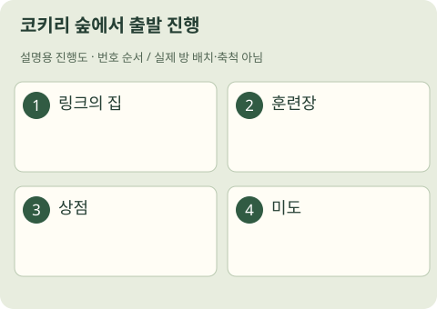
숲 안의 훈련장으로 가서 작은 구멍을 기어 통과합니다. 구르는 바위를 피하고 사다리와 점프 구간을 지나 상자의 코키리의 검을 얻습니다. 원작의 상자 위치만 보고 찾지 마세요.
풀과 돌 주변에서 루피를 모아 상점에서 데크의 방패를 삽니다. 검과 방패를 얻은 뒤 장비 화면에서 둘 다 장착합니다.
데크나무 쪽 길을 막은 미도에게 말을 겁니다. 길이 열리면 나무 앞까지 이동해 대화하고 입 안으로 들어갑니다.
완료 후 · 첫 던전 진입
새총을 얻고 고마 격파
준비 · 검 / 데크의 방패 / 데크의 가지
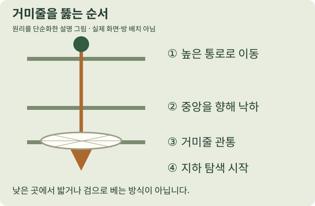
중앙 거미줄은 처음에는 건드리지 말고 덩굴을 타고 오릅니다. 지도를 얻은 뒤 데크너츠의 열매를 방패로 되받아 길을 엽니다. 무너지는 발판 너머 상자에서 새총을 얻습니다.
출구 위의 눈 스위치를 새총으로 맞혀 사다리를 내립니다. 중앙으로 돌아가 덩굴의 거미를 제거하고 더 높은 층으로 올라갑니다.
바닥 스위치로 발판을 올리고 나침반을 회수합니다. 중앙 홀의 높은 통로에서 바닥 거미줄 한가운데로 뛰어내려 지하로 갑니다.
켜진 횃불에 가지를 대고 불을 붙인 뒤 거미줄을 태웁니다. 물이 있는 방은 잠수 스위치로 수위를 조절하고 움직이는 발판으로 건넙니다.
지하의 세 마리를 왼쪽부터 1·2·3으로 보면 2 → 3 → 1 순서로 열매를 반사합니다. 마지막 상대를 따라가 말을 겁니다.
주목으로 눈을 관찰하고 붉게 변할 때 새총으로 기절시킵니다. 쓰러진 동안 검으로 공격하고, 다시 움직이면 거리를 벌려 같은 기회를 기다립니다.
완료 후 · 하트 그릇·코키리의 비취. 숲 출구에서 사리아에게 요정의 오카리나 받기
젤다의 편지와 자장가 획득
준비 · 요정의 오카리나
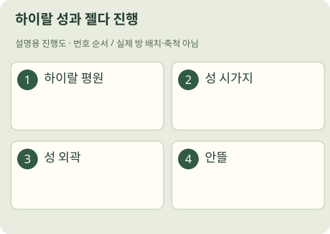
숲을 나온 뒤 북쪽 성 시가지로 이동합니다. 성으로 이어지는 길에서 말론과 대화합니다.
말론에게 받은 알이 부화하면 성 외곽에서 잠든 탈론 앞에 사용합니다. 병사들의 시야를 피하면서 진행합니다.
탈론이 비킨 자리의 상자를 옮겨 발판을 만들고 수로의 작은 구멍으로 들어갑니다. 안뜰에서는 경비병이 반대쪽을 볼 때 이동합니다.
젤다와의 대화를 마쳐 편지를 받고, 임파에게 젤다의 자장가를 배웁니다. 다음 목적지는 카카리코 마을입니다.
완료 후 · 젤다의 편지·젤다의 자장가
고론의 팔찌를 받아 동굴 입구 개방
준비 · 젤다의 편지 / 젤다의 자장가
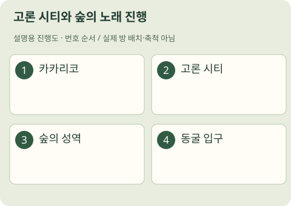
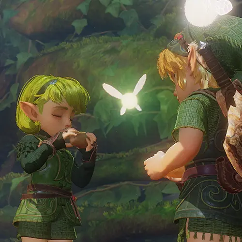
카카리코 마을의 산길 문지기에게 젤다의 편지를 보여 줍니다. 등산로를 따라 고론 시티로 올라갑니다.
최하층 문 앞에서 젤다의 자장가를 연주합니다. 아직 사리아의 노래를 모르면 숲으로 돌아갈 준비를 합니다.
미로숲에서 음악이 크게 들리는 입구를 따라 숲의 성역으로 갑니다. 입구의 적과 통로를 통과해 끝의 사리아와 대화합니다.
다르니아 앞에서 사리아의 노래를 연주해 고론의 팔찌를 얻습니다. 고론 시티 밖 절벽의 폭탄꽃을 동굴 입구의 큰 바위 쪽으로 던져 길을 엽니다.
완료 후 · 고론의 팔찌·도동고 동굴 입구 개방
폭탄 주머니를 얻고 킹 도동고 격파
준비 · 고론의 팔찌 / 새총 / 불을 옮길 가지
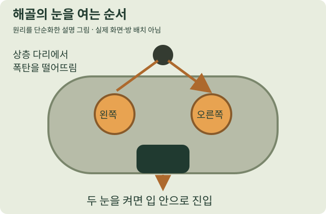
중앙 홀 서쪽에서 지도를 얻고 동쪽의 약한 벽을 폭탄꽃으로 파괴합니다. 석상을 바닥 스위치 위에 올리고 리잘포스 둘을 처치합니다.
꺼진 횃불 세 곳에 불을 옮겨 문을 엽니다. 중앙 홀로 돌아와 서쪽 문을 열고, 폭탄꽃이 늘어선 기둥 주변의 빈자리에 폭탄꽃을 놓아 연쇄 폭발시킵니다.
사다리를 막은 석상을 옮기고 올라갑니다. 눈 스위치로 불을 끄며 발판을 건너고 전투 구역을 지나 큰 상자의 폭탄 주머니를 회수합니다.
중앙 홀 상층 다리에서 폭탄을 떨어뜨려 아래 거대 해골의 양쪽 눈구멍에 넣습니다. 입이 열리면 안으로 들어가 블록으로 스위치를 고정하고 마지막 금 간 바닥을 폭파합니다.
입을 벌려 숨을 들이마실 때 폭탄을 던져 넣습니다. 쓰러지면 검으로 공격하고, 구르기 공격은 경로를 벗어나 피합니다.
완료 후 · 폭탄 주머니·하트 그릇·고론의 루비
조라 왕을 움직이고 자부자부에게 진입
준비 · 폭탄 / 젤다의 자장가 / 병을 사용할 준비
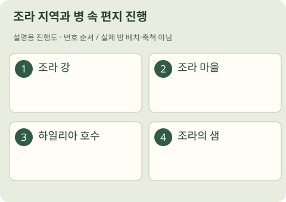
강 입구 바위를 폭파하고 상류로 올라갑니다. 폭포 앞에서 젤다의 자장가를 연주해 조라 마을로 들어갑니다.
마을 위쪽 폭포의 조라족에게 잠수 게임을 신청합니다. 성공 뒤 다시 대화해 은 비늘을 받고 수중 통로로 호수에 갑니다.
수중 통로로 나온 곳 가까이의 호수 바닥에서 편지가 든 병을 찾습니다. 조라 마을로 돌아와 조라 왕 앞에서 병을 사용합니다.
왕이 길을 비키면 빈 병에 마을 물속의 작은 물고기를 잡습니다. 조라의 샘에 있는 자부자부 앞에서 물고기를 꺼내 내부로 들어갑니다.
완료 후 · 은 비늘·편지가 든 병·자부자부 입장
루토를 데리고 부메랑을 얻어 보스 격파
준비 · 새총 / 데크의 방패
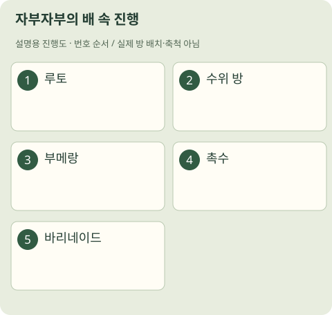
입구 천장 스위치를 새총으로 맞힙니다. 루토와 대화하고 루토가 떨어진 구멍으로 따라 내려갑니다. 다시 대화해 루토를 들고 이동합니다.
물이 차는 방에서는 먼저 루토를 건너편 높은 턱 위로 던진 뒤 바닥 스위치로 수위를 올립니다. 순서를 틀렸다면 입구 쪽 스위치로 물을 빼고 재시도합니다.
천장 스위치로 승강기를 내리고 루토와 상층으로 돌아갑니다. 갈림길 서쪽의 무게 스위치를 루토와 함께 밟고, 안쪽의 적을 전부 처치해 부메랑을 얻습니다.
루토를 스위치 위에 두어 문을 고정합니다. 부메랑으로 촉수의 약한 부분을 공격해 막힌 길을 엽니다. 중간 보스는 기절시킨 뒤 뒤쪽 약점을 공격하고, 움직이는 발판과 마지막 스위치를 지나갑니다.
부메랑으로 천장에 연결된 촉수를 끊습니다. 보호하던 해파리를 제거하고 본체를 기절시킨 뒤 검으로 공격합니다. 전기 공격 중에는 거리를 벌립니다.
완료 후 · 부메랑·하트 그릇·조라의 사파이어
마스터 소드와 훅샷 획득
준비 · 정령석 세 개
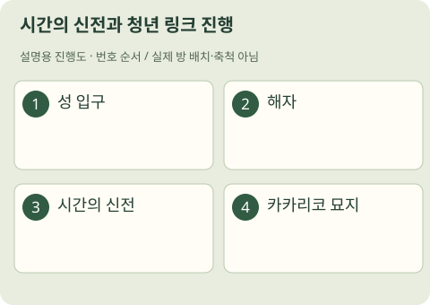
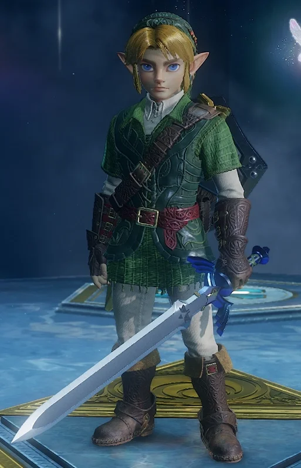
정령석 세 개를 모은 뒤 성 시가지 입구로 돌아갑니다. 젤다 관련 장면 뒤 해자의 오카리나를 회수하고 시간의 노래를 배웁니다.
시간의 신전 제단 앞에서 시간의 노래를 연주합니다. 열린 문 안쪽에서 마스터 소드를 뽑아 청년 시대로 넘어갑니다.
카카리코 묘지에서 담페이의 무덤을 열고 안으로 들어갑니다. 담페이의 뒤를 따라 경주를 끝내 첫 보상으로 훅샷을 받습니다.
청년 상태로 풍차의 연주자 앞에서 오카리나를 꺼내 폭풍의 노래를 배웁니다. 어린 시대로 돌아갈 수 있게 된 뒤 우물에 사용할 곡입니다.
완료 후 · 마스터 소드·훅샷·폭풍의 노래
요정의 활을 얻고 네 불꽃 복구
준비 · 훅샷 / 시간의 노래 / 사리아의 노래
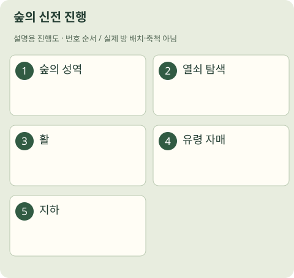
미로숲에서 미도가 막으면 사리아의 노래를 들려줍니다. 성역에서 시크에게 숲의 미뉴에트를 배우고 입구의 나뭇가지를 훅샷으로 잡습니다.
입구의 덩굴 위 상자, 중앙 홀 북쪽의 스탈포스 전투, 중정에서 물을 뺀 우물의 지하 통로를 확인합니다. 시간 블록은 시간의 노래로 치웁니다.
블록 방은 바닥 화살표 방향으로 밀어 높이를 확보합니다. 위층과 비틀린 통로를 진행하고 전투 방에서 요정의 활을 얻습니다.
그림 속 유령을 활로 몰아내고 전투를 마칩니다. 눈 스위치로 복도 상태를 바꾸며 보스 열쇠와 남은 자매를 찾습니다. 중앙의 분신 전투는 본체를 관찰해 활로 맞힌 뒤 추격합니다.
네 불꽃이 돌아오면 중앙 승강기로 내려갑니다. 벽을 밀어 방을 회전시키고 스위치를 눌러 보스 문까지 길을 엽니다.
전반에는 그림에서 튀어나오는 순간 활로 맞힙니다. 후반에는 날아오는 에너지탄을 검으로 되받고 쓰러졌을 때 접근해 공격합니다. 힘을 모아 돌진하면 옆으로 피합니다.
완료 후 · 요정의 활·숲의 메달
고론을 구출하고 메가톤 해머 획득
준비 · 훅샷 / 활 / 폭탄
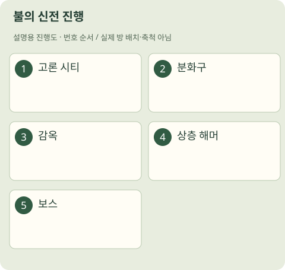
고론 시티의 구르는 작은 고론을 폭탄 폭발로 멈추고 이야기를 듣습니다. 고론의 옷을 받은 뒤 다르니아 방의 석상을 당겨 분화구로 갑니다. 훅샷으로 끊어진 다리를 건너 불의 볼레로를 배웁니다.
신전 입구에서 잠기지 않은 서쪽 방을 먼저 확인합니다. 다르니아 장면 뒤 스위치로 고론을 구출하고 상자를 엽니다. 큰 용암 방의 양쪽 감옥도 확인합니다.
철망 위 블록을 불기둥에 떨어뜨리고 타고 올라갑니다. 수정 스위치는 활로 멀리서 바꿔 불벽을 끄고, 블록을 발판 삼아 철망을 오릅니다.
굴러오는 바위 방과 불벽 미로를 통과해 상층의 메가톤 해머를 얻습니다. 해머로 바닥과 녹슨 스위치를 작동시켜 아래층으로 이어지는 길을 열고 보스 열쇠를 찾습니다.
구멍에서 머리를 드러낼 때 해머로 머리를 내려치고 노출된 약점을 검으로 공격합니다. 비행 중의 불과 낙석은 피하며 다음 기회를 기다립니다.
완료 후 · 메가톤 해머·불의 메달
헤비 부츠와 물의 세레나데 확보
준비 · 빈 병 / 검
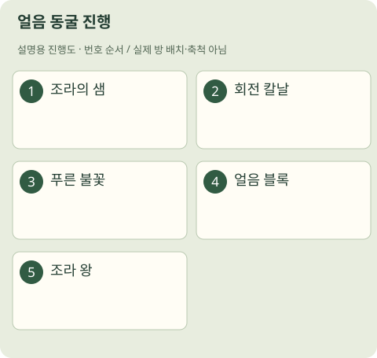
얼어붙은 조라 왕의 옆 통로로 조라의 샘에 나갑니다. 유빙을 건너 북쪽 동굴에 들어갑니다. 왕을 먼저 녹일 필요는 없습니다.
냉기를 뿜는 적을 제거하고 회전 칼날 방의 은 루피 다섯 개를 모읍니다. 다음 구역의 푸른 불꽃을 빈 병에 담아 붉은 얼음을 녹입니다.
블록을 밀어 은 루피와 높은 길에 접근합니다. 블록을 사용할 수 없는 위치로 보냈다면 구덩이로 밀어 초기 위치에 다시 나오게 합니다.
끝의 전투를 마치고 헤비 부츠를 얻습니다. 시크에게 물의 세레나데를 배운 뒤, 돌아가기 전에 왕의 붉은 얼음을 녹일 푸른 불꽃을 보충합니다.
조라 왕에게 푸른 불꽃을 사용하고 대화해 조라의 옷을 받습니다. 부츠와 옷을 준비한 뒤 하일리아 호수로 갑니다.
완료 후 · 헤비 부츠·조라의 옷·물의 세레나데
수위를 조절해 롱샷과 보스 열쇠 확보
준비 · 헤비 부츠 / 조라의 옷 / 훅샷 / 활 / 폭탄
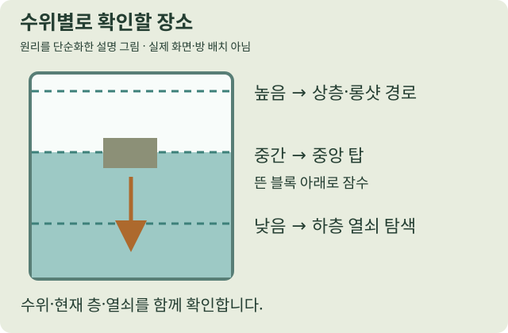
호수에서 헤비 부츠로 가라앉아 입구 위 장치를 훅샷으로 당깁니다. 신전의 동쪽 수중 통로에서 루토를 만난 뒤 부츠를 벗고 떠올라 지도를 얻습니다.
왕가 문양에서 자장가를 연주해 수위를 내립니다. 횃불 방과 하층의 폭파 벽·블록 통로를 돌아 열쇠를 모읍니다.
중앙 탑에 들어가 중간 높이로 수위를 올립니다. 함께 떠오른 블록 아래에 생긴 입구로 잠수해 숨은 길을 확인합니다. 열쇠를 놓치기 쉬운 지점입니다.
최고 수위로 올려 폭포 발판과 용 석상 구역을 통과합니다. 다크 링크를 쓰러뜨려 롱샷을 얻고, 상자 뒤 시간 블록을 치워 소용돌이 수로로 진행합니다.
다시 수위를 내리고 중간 높이로 맞춰 남은 블록 뒤 열쇠를 회수합니다. 북쪽의 바위·급류 경로를 지나 보스 열쇠를 얻고 수위를 올려 보스 방으로 향합니다.
물 촉수 안의 핵을 롱샷으로 끌어내 검으로 공격합니다. 촉수의 잡기에 걸리지 않게 구석을 피하고 충분한 거리를 유지합니다.
완료 후 · 롱샷·물의 메달
진실의 렌즈 획득
준비 · 폭풍의 노래 / 시대 전환 해금 / 젤다의 자장가
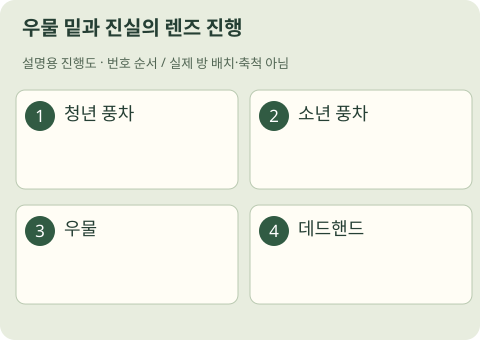
청년 풍차에서 폭풍의 노래를 배웠는지 확인합니다. 시간의 신전에서 소년으로 돌아와 풍차 안에서 그 곡을 연주하면 우물의 물이 빠집니다.
우물로 내려가 통과할 수 있는 가짜 벽을 지나갑니다. 물이 있는 구역의 왕가 문양에서 젤다의 자장가를 연주해 내부 수위도 낮춥니다.
물이 빠진 뒤 입구 쪽에서 드러난 작은 통로를 통과해 데드핸드와 전투합니다. 손을 폭탄이나 검으로 공격해 본체를 유도하고, 다가와 머리를 낮추는 순간 검으로 공격합니다. 보상 상자에서 렌즈를 얻습니다.
완료 후 · 진실의 렌즈
숨은 길을 찾아 봉고봉고 격파
준비 · 진실의 렌즈 / 딘의 불꽃 / 활 / 롱샷
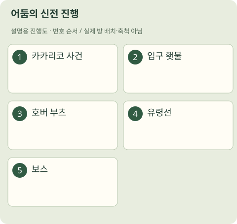
메달 진행 후 청년으로 카카리코를 방문해 시크 사건과 어둠의 녹턴 습득을 확인합니다. 묘지 입구로 이동해 렌즈로 횃대를 살피고 중앙에서 딘의 불꽃으로 동시에 불을 붙입니다.
입구 구덩이를 훅샷으로 건너고 렌즈로 가짜 벽을 확인합니다. 지도 방을 정리한 뒤 서쪽의 데드핸드는 손을 공격해 본체를 부르고 낮춘 머리를 노립니다. 쓰러뜨리면 호버 부츠를 얻습니다.
렌즈로 진짜 해골 표적을 찾아 새 석상을 돌립니다. 호버 부츠로 틈을 건너고 은 루피를 모읍니다. 떨어지는 가시 천장은 숨은 블록을 끌어 받칩니다.
바람이 강한 곳은 헤비 부츠를 활용합니다. 숨은 옆 통로로 건너갈 때는 호버 부츠로 바꿉니다. 렌즈로 숨은 상자와 천장 표적도 확인합니다.
배 위 문양에서 자장가를 연주합니다. 배가 가라앉기 전에 내려 다음 구역의 열쇠를 모읍니다. 강 건너 폭탄꽃을 활로 맞혀 석상을 쓰러뜨려 다리를 만듭니다.
양손을 원거리 공격으로 멈춘 뒤 렌즈로 본체의 눈을 확인해 맞힙니다. 기절하면 접근해 검으로 공격합니다. 북판의 흔들림과 손의 잡기를 경계합니다.
완료 후 · 호버 부츠·어둠의 메달
목수 넷 구출 후 사막 통과
준비 · 롱샷 / 진실의 렌즈 / 활 / 회복 수단
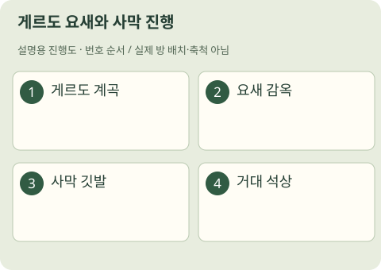
평원 서쪽의 게르도 계곡으로 갑니다. 다리는 에포나로 뛰어넘거나 롱샷으로 건널 수 있습니다. 목수의 우두머리와 대화한 뒤 요새로 향합니다.
감옥에 갇히면 높은 창문에 롱샷을 걸어 나옵니다. 아래쪽 출입구부터 들어가 갇힌 목수와 대화하고 나타나는 전사를 쓰러뜨립니다. 열쇠로 감옥을 열고 목수에게 다시 말을 겁니다.
바깥 계단과 상층 출입구를 돌며 같은 방식으로 남은 목수를 구출합니다. 순찰병은 뒤나 옆에서 활로 잠시 기절시킬 수 있으나 다시 깨어납니다.
네 명을 모두 구출하고 통행 자격을 얻은 뒤 사막 문을 엽니다. 유사 구간은 롱샷 표적을 이용하고, 깃발을 따라 석조 건물까지 갑니다. 렌즈로 길잡이를 확인해 거대 석상 쪽으로 이동합니다.
시크에게 영혼의 레퀴엠을 배웁니다. 소년으로 돌아와 이 곡으로 다시 이동해야 신전의 어린이용 통로를 진행할 수 있습니다.
완료 후 · 요새 통행 자격·영혼의 레퀴엠
소년의 은 장갑, 청년의 거울 방패 획득
준비 · 소년: 부메랑·폭탄 / 청년: 롱샷·해머 / 영혼의 레퀴엠
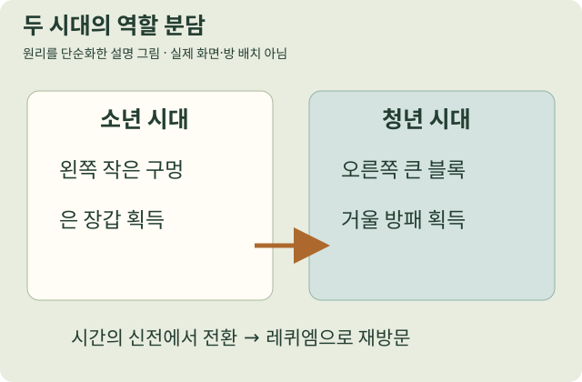
시간의 신전에서 소년으로 돌아와 레퀴엠으로 재방문합니다. 나볼의 부탁을 받고 작은 구멍으로 들어갑니다. 철망 너머 스위치는 부메랑이 휘어 돌아가도록 던집니다.
폭발 도구로 금 간 벽에 빛이 들어오게 합니다. 빛이 닿는 위치로 태양 문양 블록을 밀고 은 루피와 열쇠를 모읍니다. 아이언 너클을 넘어 바깥 상자의 은 장갑을 얻습니다.
청년으로 바꿔 돌아오면 은 장갑의 힘으로 입구 오른쪽 큰 블록을 밀 수 있습니다. 새 경로의 바위와 거울 장치를 풀고 거대 석상 구역을 진행합니다.
아이언 너클 전투 뒤 바깥 상자의 거울 방패를 받습니다. 들어오는 빛을 태양 문양과 거울 장치에 반사해 길을 엽니다. 보스 열쇠를 얻고 거상 얼굴에 빛을 비춰 마지막 통로를 찾습니다.
거울 방패로 한쪽의 마법을 받아 반대 속성의 상대에게 반사합니다. 합체 뒤에는 같은 속성의 공격을 연속으로 흡수해 방출하고, 쓰러졌을 때 접근해 검으로 공격합니다. 다른 속성이 섞이지 않게 관찰합니다.
완료 후 · 은 장갑·거울 방패·영혼의 메달
여섯 결계를 해제하고 최종 보스 격파
준비 · 빛의 화살 / 마스터 소드 / 롱샷 / 거울 방패 / 마력 회복 수단
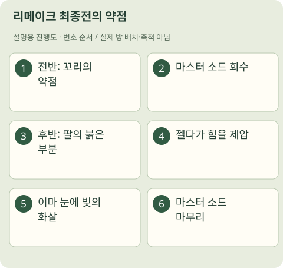
현자 관련 진행을 마치고 시간의 신전의 장면을 확인해 빛의 화살을 받습니다. 성 북쪽 절벽으로 가서 현자들이 만든 다리를 건넙니다.
어둠 결계 구역을 먼저 돌아 황금 장갑을 얻습니다. 무거운 장애물을 치우는 힘을 다른 결계 구역에서도 사용합니다.
불은 용암·은 루피, 빛은 숨은 길, 영혼은 찍폭탄·반사광, 숲은 횃불·바람, 물은 푸른 불꽃·얼음 블록을 활용합니다. 각 구역 끝의 결계 핵을 빛의 화살로 해제합니다.
결계를 모두 해제하면 중앙 탑을 오릅니다. 가논돌프의 에너지탄을 검으로 반사해 맞힌 뒤 빛의 화살로 쓰러뜨립니다. 롱샷으로 접근해 검으로 공격합니다.
젤다를 따라 이동하며 길을 막는 적을 처치합니다. 제한 시간과 젤다의 위치를 확인하며 밖으로 나갑니다.
처음에는 잃어버린 검 대신 해머 등으로 꼬리의 약점을 공격합니다. 검을 되찾은 후에는 팔의 붉은 부분을 노립니다. 젤다의 제압 장면 뒤 이마의 눈이 열리면 빛의 화살을 맞히고 마지막 일격은 마스터 소드로 마무리합니다.
공격을 막연히 연타하기보다 반사·빛의 화살·근접 공격 순서를 지킵니다. 빛의 화살용 마력이 떨어지면 주변 회복 수단과 부서지는 잔해를 확인합니다.
완료 후 · 메인 스토리 엔딩
이 공략은 2026년 Switch 2판의 메인 스토리용입니다. 원작·3DS판·3DS의 마스터 퀘스트와 구별합니다. 던전과 보스 이름, 후반 장비의 스포일러가 포함됩니다. 조작 버튼과 오카리나 음표는 설정과 게임 화면 안내를 우선합니다.
이번 판은 버튼으로 직접 점프합니다. 원작의 자동 점프 설명만 따라가지 마세요. 같은 장소라도 지형과 스위치, 보스의 후반 패턴이 달라질 수 있습니다. 이 문서의 연결도는 진행 순서이며 실제 방 배치 지도가 아닙니다.
빈 병, 하트 조각, 황금 스탈튤라, 마법의 콩, 에포나, 교환 이벤트는 별도로 정리하며 진행하는 편이 편합니다. 지역 수집 탭에서 하트 조각 목록과 핵심 보물상자를 확인할 수 있습니다. 모든 루피·열쇠 상자를 담은 전수 목록은 아닙니다. 장 완료 체크는 해당 장의 진행 단계에만 적용되며 100% 수집 완료를 뜻하지 않습니다.
어둠의 신전 입구에는 딘의 불꽃이 필요합니다. Switch 2 전용 GameWith는 소년 시절 데스마운틴 등산로 정상의 대요정에게 25루피로 해금한다고 안내합니다. nJOY의 진행 표도 같은 보상을 적지만 주변 본문에는 원작의 회전베기 설명이 섞여 있습니다. 한국판 화면 대조 전 정보이므로 대요정의 실제 보상 안내를 확인하고 받으세요.
본문과 화면 안내는 한국어로 작성했습니다. 공식 소개에서 확인한 작품명과 기본 용어 외의 세부 장비·보스명은 한국어 참고 표기입니다. 한국판 실기 화면과 전부 대조한 공식 명칭집은 아닙니다. 검색은 한국어 별칭과 일본어·영어 이름도 지원합니다.
2026년 11월 18일 열람한 Switch 2 전용 자료를 요약하고 대조했습니다. 게임의 패치 번호와 한국판 전체 실기 진행은 확인하지 않았습니다. 각 장의 실제 방별 이동과 수집품 전수 회수까지 검증한 완전 공략은 아닙니다. 한국어 2차 자료가 인용한 일본 원문은 독립 출처로 중복 계산하지 않았습니다.
입수처와 활용 조건을 확인하고, 얻은 장비를 체크하세요.
해당 조건의 항목이 없습니다. 검색어나 지역·시대 필터를 바꿔 보세요.
시간의 신전 · 청년
조건 · 정령석 3개·시간의 노래
보상·활용 · 퇴마의 검·시대 전환
하일리아 호수 · 청년
조건 · 낚시
보상·활용 · 연구소 바닥 잠수
하일리아 호수 · 청년
조건 · 물의 신전 완료·활
보상·활용 · 멀리 있는 횃불 점화
게르도 요새 · 청년
조건 · 요새 통행·수련장
보상·활용 · 적을 얼리는 화살
데스마운틴 등산로 · 소년
조건 · 폭탄·25루피
보상·활용 · 주변 횃불 동시 점화
데스마운틴 등산로 · 청년
조건 · 교환 이벤트 완료
보상·활용 · 부러지지 않는 양손검
가면·교환·이동·강화 이벤트를 순서대로 정리했습니다.
해당 조건의 항목이 없습니다. 검색어나 지역·시대 필터를 바꿔 보세요.
성 시가지 · 소년
조건 · 젤다의 편지·사리아의 노래·정령석 진행
보상·활용 · 진실의 가면·추가 가면 대여
카카리코 마을 · 청년
조건 · 에포나·조라 왕 해동·이동 경로 확보
보상·활용 · 빅고론도
론론 목장 · 두 시대
조건 · 소년 때 에포나의 노래·청년의 경주 참가비
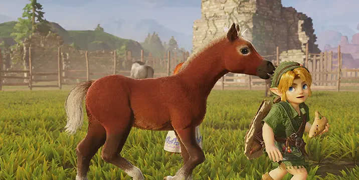
보상·활용 · 평원 이동·기마 활쏘기·빅포우 사냥
여러 지역 · 두 시대
조건 · 미니게임·조라 진행·활·에포나
보상·활용 · 빈 병 총 5개
미로숲 · 두 시대
조건 · 해골 가면 / 진실의 가면
보상·활용 · 가지·열매 주머니 강화
하일리아 호수 · 두 시대
조건 · 오카리나·훅샷
보상·활용 · 숨은 높은 발판 접근
여러 지역 · 두 시대
조건 · 소년의 마법의 콩
보상·활용 · 미래의 이동 발판
하트 조각 36개 항목과 핵심 보물상자 목록입니다. 모든 루피·열쇠 상자의 전수 목록은 아닙니다.
해당 조건의 항목이 없습니다. 검색어나 지역·시대 필터를 바꿔 보세요.
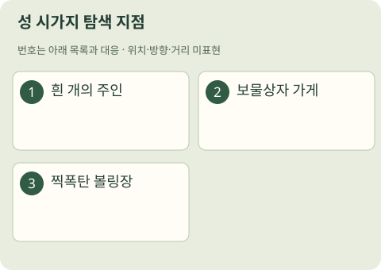
성 시가지 · 소년
조건 · 밤
보상·활용 · 하트 조각 1개
성 시가지 · 소년
조건 · 밤·진실의 렌즈 권장
보상·활용 · 하트 조각 1개
성 시가지 · 소년
조건 · 미니게임 참가비
보상·활용 · 하트 조각 1개
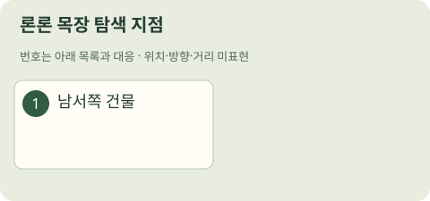
론론 목장 · 소년
조건 · 작은 구멍 통과
보상·활용 · 하트 조각 1개
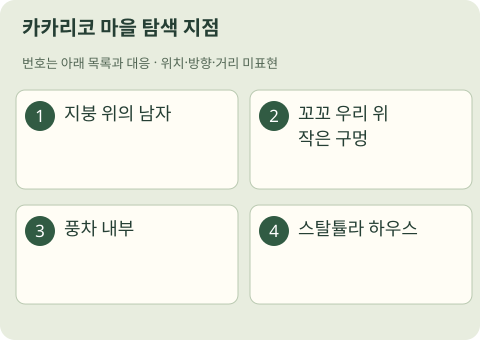
카카리코 마을 · 두 시대
조건 · 꼬꼬 / 훅샷
보상·활용 · 하트 조각 1개
카카리코 마을 · 두 시대
조건 · 산 정상 귀환 / 훅샷
보상·활용 · 하트 조각 1개
카카리코 마을 · 청년
조건 · 담페이 경주 귀환
보상·활용 · 하트 조각 1개
카카리코 마을 · 두 시대
조건 · 황금 스탈튤라 증표 50개
보상·활용 · 하트 조각 1개
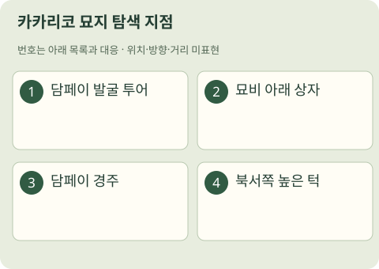
카카리코 묘지 · 소년
조건 · 밤·발굴 참가비
보상·활용 · 하트 조각 1개
카카리코 묘지 · 두 시대
조건 · 묘비 이동 가능 시간
보상·활용 · 하트 조각 1개
카카리코 묘지 · 청년
조건 · 훅샷 획득 후 재도전
보상·활용 · 하트 조각 1개
카카리코 묘지 · 청년
조건 · 소년 때 심은 콩
보상·활용 · 하트 조각 1개
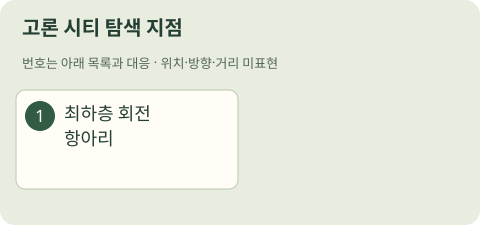
고론 시티 · 소년
조건 · 가지·폭탄꽃 / 폭탄
보상·활용 · 하트 조각 1개
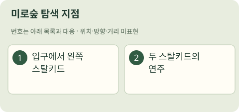
미로숲 · 소년
조건 · 사리아의 노래
보상·활용 · 하트 조각 1개
미로숲 · 소년
조건 · 오카리나
보상·활용 · 하트 조각 1개
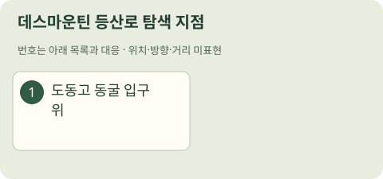
데스마운틴 등산로 · 청년
조건 · 소년 때 심은 콩
보상·활용 · 하트 조각 1개
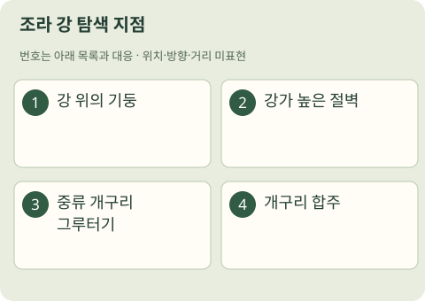
조라 강 · 두 시대
조건 · 꼬꼬 / 자란 콩
보상·활용 · 하트 조각 1개
조라 강 · 두 시대
조건 · 꼬꼬 / 호버 부츠
보상·활용 · 하트 조각 1개
조라 강 · 소년
조건 · 폭풍의 노래
보상·활용 · 하트 조각 1개
조라 강 · 소년
조건 · 일반 노래·폭풍의 노래
보상·활용 · 하트 조각 1개
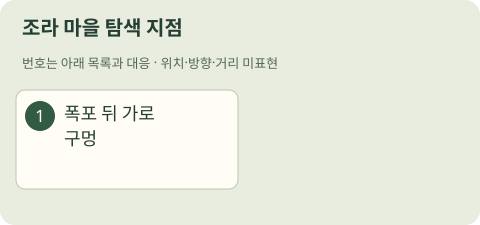
조라 마을 · 소년
조건 · 불을 붙일 가지
보상·활용 · 하트 조각 1개
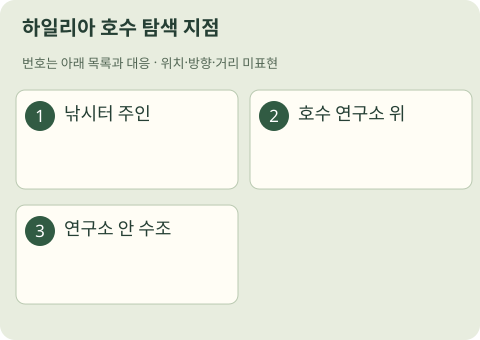
하일리아 호수 · 소년
조건 · 낚시 참가비
보상·활용 · 하트 조각 1개
하일리아 호수 · 청년
조건 · 자란 콩 / 허수아비·훅샷
보상·활용 · 하트 조각 1개
하일리아 호수 · 두 시대
조건 · 금 비늘
보상·활용 · 하트 조각 1개
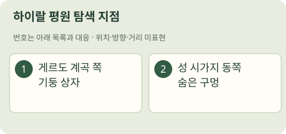
하이랄 평원 · 소년
조건 · 청년 요정 메모 선행
보상·활용 · 하트 조각 1개
하이랄 평원 · 소년
조건 · 폭탄·청년 암호 확인·100루피
보상·활용 · 하트 조각 1개
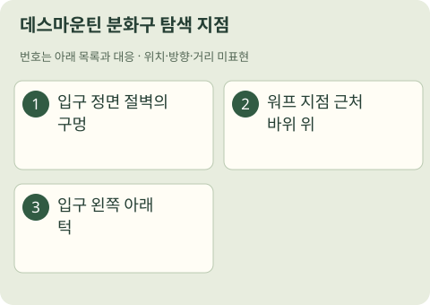
데스마운틴 분화구 · 두 시대
조건 · 고열 구역 체력 관리
보상·활용 · 하트 조각 1개
데스마운틴 분화구 · 청년
조건 · 소년 때 심은 콩
보상·활용 · 하트 조각 1개
데스마운틴 분화구 · 소년
조건 · 방패·고열 구역 준비
보상·활용 · 하트 조각 1개
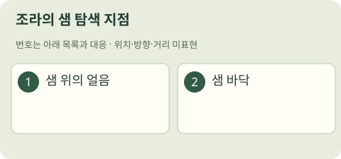
조라의 샘 · 청년
조건 · 유빙 점프
보상·활용 · 하트 조각 1개
조라의 샘 · 청년
조건 · 헤비 부츠·조라의 옷
보상·활용 · 하트 조각 1개
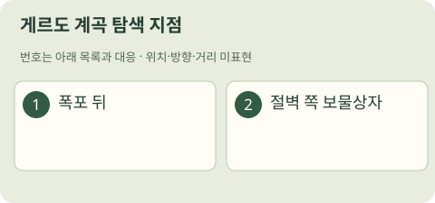
게르도 계곡 · 두 시대
조건 · 꼬꼬 활공 등 접근 수단
보상·활용 · 하트 조각 1개
게르도 계곡 · 두 시대
조건 · 롱샷 경로 권장
보상·활용 · 하트 조각 1개
게르도 요새 · 청년
조건 · 허수아비의 노래·훅샷
보상·활용 · 하트 조각 1개
게르도 요새 · 청년
조건 · 에포나·활·통행 자격
보상·활용 · 하트 조각 1개
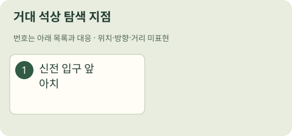
거대 석상 · 청년
조건 · 소년 때 심은 콩
보상·활용 · 하트 조각 1개
시대 연계·숨은 구멍·부가 상호작용을 모았습니다.
해당 조건의 항목이 없습니다. 검색어나 지역·시대 필터를 바꿔 보세요.
하이랄 평원 · 두 시대
조건 · 나비·시대 전환
보상·활용 · 잠긴 상자·상인의 하트
여러 지역 · 두 시대
조건 · 폭탄 / 폭풍의 노래 / 해당 장비
보상·활용 · 숨은 상인·강화·루피
론론 목장 · 두 시대
조건 · 에포나의 노래·빈 병
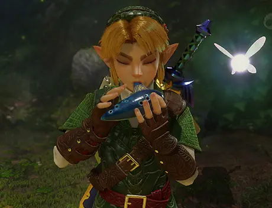
보상·활용 · 우유 회복 보충
하이랄 평원 · 소년
조건 · 데크의 가지
보상·활용 · 숨은 회복 수단
여러 지역 · 두 시대
조건 · 진실의 가면
보상·활용 · 세계의 소문·추가 대사
코키리 숲 · 두 시대
조건 · 메인 스토리 진행
보상·활용 · 마물 관찰·보스 재도전
여러 지역 · 두 시대
조건 · 토끼 머리띠·진실의 가면
보상·활용 · 탐색 보조·대화 변화
5개 사이트 · 62개 문서 · 확인 2026-11-18
일본어 자료는 한국어로 요약했습니다. 한국판 실기·세부 명칭은 전체 대조 전입니다.
문서 수 기준 GameWith 30개가 가장 많습니다. OoT Guide는 GameWith를 인용한 부분이 있어 독립 근거로 중복 계산하지 않습니다.
공식 소개 화면의 권리자는 Nintendo입니다. 설명용 SVG는 자체 제작했으며 실제 지도·게임 화면이 아닙니다.
일본어 리메이크 전용 공략 · 핵심 진행·던전
일본어 리메이크 전용 공략 · 후반 신전·보스
한국어 제공 공략 · GameWith 재가공 부분은 독립 검증에서 제외